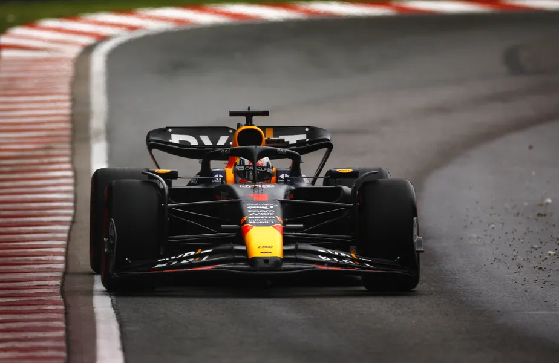

NAVEGUE
Home
Pilotos
Calendário/Tabela
Grand Prix
Construtoras
Últimas Notícias
GP do Canadá: Faça chuva ou faça sol... Verstappen faz a Pole no Canadá
Pode chover, pode fazer sol. O fato é que uma coisa não muda na temporada 2023 da Fórmula 1: o fato de que Max Verstappen sempre vai estar na frente. Foi exatamente o que aconteceu na classificação deste sábado para o GP do Canadá. No chove-não-molha do Circuito Gilles Villeneuve, na Ilha de Notre-Dame, em Montreal, o holandês da RBR driblou até mesmo as interrupções pelas bandeiras vermelhas para aniquilar a concorrência no Q3 com mais de um segundo de vantagem. Com a pista molhada, ele marcou 1m25s858 e colocou 1s428 em cima de Fernando Alonso, da Aston Martin. O espanhol herdou a segunda vaga na primeira fila após a punição ao alemão Nico Hulkenberg, da Haas, que não respeitou o limite de velocidade na bandeira vermelha do acidente de Oscar Piastri e foi punido com a perda de três posições, caindo para o quinto lugar.
Verstappen marcou a 25ª pole position de sua carreira, a quinta na temporada 2023 e a terceira seguida nas últimas três provas. O holandês confirmou o favoritismo da RBR, que já provou ter um carro melhor que os demais em todas as condições climáticas e em todos os tipos de pistas neste ano. Outra beneficiada pela punição a Hulkenberg foi a dupla da Mercedes. Tanto Lewis Hamilton quanto George Russell ganharam uma posição em relação ao que tinham obtido na classificação: o heptacampeão sai em terceiro, uma posição à frente do companheiro.
Independente da punição, Hulkenberg se aproveitou mais uma vez das condições climáticas para colocar a Haas entre as dez primeiras colocadas neste sábado. À frente, por exemplo, de carros mais fortes como a Alpine do francês Esteban Ocon, sexto colocado no grid. A McLaren colocou seus dois carros na quarta fila, com Lando Norris em sétimo e o Oscar Piastri, que bateu no início do Q3 mas tinha conseguido marcar um tempo antes do acidente, em oitavo. O tailandês Alexander Albon, da Williams, destaque no Q2 ao acertar o timing de usar os pneus slicks, vai largar em uma excelente nona posição, uma à frente de Charles Leclerc, da Ferrari, que homenageia o canadense Gilles Villeneuve em seu capacete e fecha a lista dos dez primeiros.
A F1 retorna daqui a duas semanas, em 2 de julho, com o GP da Áustria, nona etapa de 23 nesta temporada.
